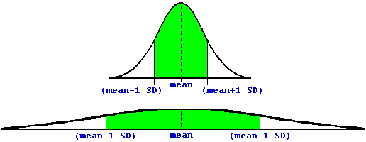

So, what is this mythical "Standard Deviation"?
The short answer is: it gives an idea about how much "spread" there is in a set of data. About 68% of all the points in a "normally-distributed" data set will be between 1 SD below the mean, and 1 SD above the mean. These 68% are shown in green.
To see what this means, consider two different normal distributions:

The second distribution has a much larger SD, and the data are more spread out. The green areas, though, encompass the same percentage of all the data points -- about 68%. So, the bigger the SD, the more spread out the data are.